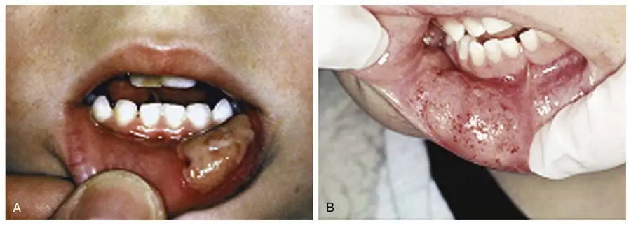
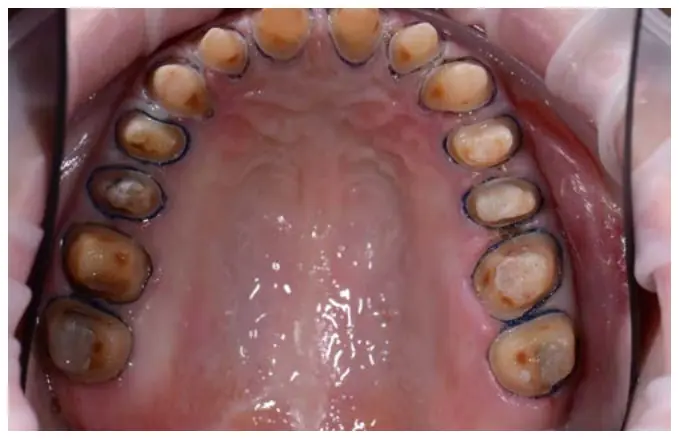

نسخه استخراجشده؛ ترجمه یا تأیید علمی انجام نشده است. وضعیت: captured
پسری ۵ ساله پس از ترمیم مولر شیری پایین با IANB مرخص شد. عصر مادرش زنگ میزند: لب پایین کودک زخم و متورم است. چه چیزی پیشگیریپذیر بود؟

بیحسی بافت نرم خیلی بیشتر از پالپ میماند و گاهی ۴ ساعت یا بیشتر. بیشتر آسیبها در لب پایین است، کمتر در زبان و بهندرت در لب بالا. پرخطرها: کودک کمسن، سالمند بالای ۸۵ سال و بیمار دارای ناتوانی ذهنی یا جسمی.
پس از IANB در کودکان، گاز گرفتن لب و زبان زیر ۴ سال حدود ۱۸٪، در ۴ تا ۷ سال ۱۶٪، در ۸ تا ۱۱ سال ۱۳٪ و از ۱۲ سال به بعد ۷٪ است.
درمان: اطمینان دادن، صبر تا برگشت حس و وازلین روی زخم.
نکتهی طلایی: ایبوپروفن ۶۰۰ میلیگرم از ۴۰۰ میلیگرم مؤثرتر است و NSAIDها برای درد دندانپزشکی از مخدرها بهترند؛ مخدر تهوع، یبوست و وابستگی هم دارد.
